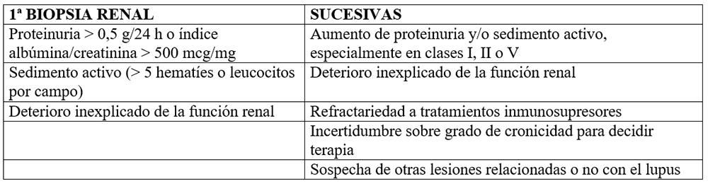
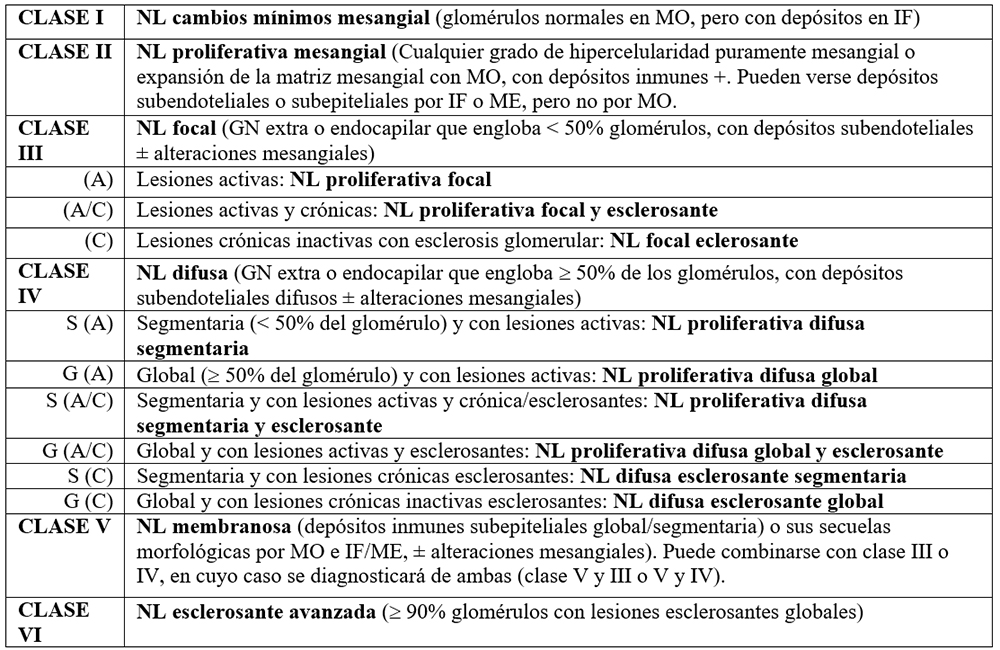
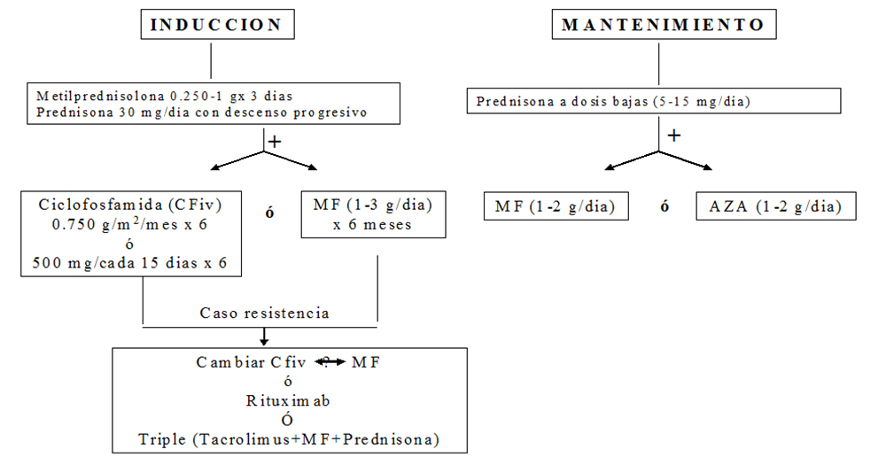

<div class="pages">
  <div data-page="projects" class="page no-toolbar no-navbar">
    <div class="page-content">
    
     <div class="navbarpages">
       <div class="navbar_home_link"><a href="toogle.html"></a></div>
       <div class="navbar_page_center"><b>Especialidades</b></div>
       <div class="menu_open_icon_white"><a href="#" class="open-panel"></a></div>
     </div>
     <div id="pages_maincontent">

          <h2 class="page_subtitle">Nefritis Lúpica</h2>
          <p><b>Autor/a:</b> Mª Adoración Martín Gómez, Hospital de Poniente, El Ejido (Almería)</p>
          <div class="page_single">         
              <div class="buttons-row">
                    <a href="#tab4" class="tab-link active button">Biopsia Renal</a>
                    <a href="#tab5" class="tab-link button">Tratamiento</a>
                    <a href="#tab6" class="tab-link button">Bibliografía</a>
              </div>
              
              <div class="tabs-simple">
                    <div class="tabs">
                          
                          <div id="tab4" class="tab active">
                          		<br />
                                <h4>Biopsia Renal</h4>
                                <p class="nojustify">

									<b>Indicaciones</b> <br /><br />
                                	
                                </p>
                                <p class="nojustify">
                                    <b>Clasificación</b> [NL 2003 (ISN/RPS)] <br /><br />
                                	
                                    NL, nefritis lúpica; MO, microscopía óptica; IF, inmunofluorescencia; ME, microscopía electrónica. 
                                </p>
                          </div> 
                          
                          <div id="tab5" class="tab">
                          		<br />
                                <h4>Tratamiento</h4>
                                <p class="nojustify">
                                    <b>General</b> <br /><br />
                                	&bull;&nbsp;<u>Hidroxicloroquina:</u> 200-400 mg/día de por vida (con seguimiento oftalmológico) <br />
                                    &bull;&nbsp;<u>ARA-II/IECA:</u> según presión arterial/proteinuria<br />
                                    &bull;&nbsp;<u>Inmunosupresores:</u> depende de la clase histológica y se divide en inducción y mantenimiento<br /><br />
                                </p>
                                <blockquote class="sin">
                                    &omicron;&nbsp; <u>Clases I-II:</u> no precisan tratamiento de inducción (en ocasiones, esteroides a dosis bajas, 30 mg/día, para la clase II)<br /><br />
                                    &omicron;&nbsp; <u>Clases III-IV o mixtas III+V, IV+V:</u> ver algoritmo<br /><br />
                                    &omicron;&nbsp; <u>Clase V:</u> igual que en las III-IV o mixtas, pero se añade anticalcineurínicos como 3ª opción, tanto en inducción como en mantenimiento: ciclosporina 2-5 mg/kg/día, tacrolimus 0,1-0,2 mg/kg/día (monitorizar niveles)
								</blockquote>
                                <p></p>
                                <p class="nojustify">
                                	<b>Algoritmo terapéutico en la NL III-IV</b> <br /><br />
                                    
                                </p>
                                <p></p>
                                <p class="justify">
                                	<b>Monitorización</b> <br /><br />
                                    Trimestral durante los 2 primeros años y semestral posteriormente si buena evolución: hemograma, creatinina, VSG, C3 y C4, antiADN, sedimento y proteinuria.
                                </p>
                          </div>
                          <div id="tab6" class="tab">
                          		<br />
                                <h4>Bibliografía</h4>
                                <p class="justify">
                                    <b>1. </b>Ruiz-Irastorza G, Espinosa G, Frutos-Sanz MA, Jiménez Alonso J, Praga M, Pallarés L, et al. Diagnóstico y tratamiento de la nefritis lúpica. Documento de consenso del Grupo de Enfermedades Autoinmunes Sistémicas (GEAS) de la Sociedad Española de Medicina Interna (SEMI) y de la Sociedad Española de Nefrología (S.E.N.). Nefrologia 2012;32(Supl 1):1-35.  <br /><br />
                                    
                                    <b>2. </b>Martín Gómez MA. Presente y pasado del tratamiento Inmunosupresor de la de la Nefritis Lúpica en la provincia de Málaga. Repositorio Institucional de la Universidad de Málaga. ISBN: 978-84-9747-673-7. <a href="http://hdl.handle.net/10630/5018" target="_blank">http://hdl.handle.net/10630/5018</a><br /><br />
                                    
                                    <b>3. </b>Grupo de trabajo de la Guía de Práctica Clínica sobre Lupus Eritematoso Sistémico. Guía de Práctica Clínica sobre Lupus Eritematoso Sistémico. Ministerio de Sanidad, Servicios Sociales e Igualdad. Servicio de Evaluación del Servicio Canario de la Salud; 2015. Guías de Práctica Clínica en el SNS. NIPO: 680-15-083-4. <a href="http://portal.guiasalud.es/web/guest/gpc-sns" target="_blank">http://portal.guiasalud.es/web/guest/gpc-sns</a>
                                </p>
                          </div>
                    </div>
              </div>        
          </div>     
      </div>  
    </div>
  </div>
</div>